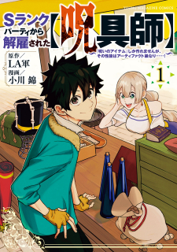

Manga Reading List |
||
|---|---|---|
Archmage Transcending Through RegressionMikhail Walpurgis, the world’s only 9th-circle Archmage, fell in battle due to a damned hero, and managed to cast one final advanced magic spell, . As time rewound, he regressed to 20 years ago. “Fine. I’ll just become the hero instead.” |
||
My S-Rank Party Fired Me for Being a Cursificer ~ I Can Only Make “Cursed Items”, but They're Artifact Class!Gaile, a Cursificer, is left penniless when he's expelled from his party as soon as they reach S Rank. Apparently he wasn't contributing enough?! But they hadn't realized that his cursed items outperform even holy relics and legendary equipment! Gaile decides to try to make a living on his own off of his cursed items. |
 |